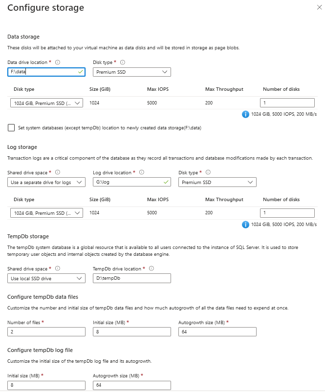

When I build infrastructure in Azure, I use terraform. I can’t force myself to use ARM templates, and I’m not yet convinced to use bicep. Terraform has flaws and problems, and HCL is not that intuitive initially, but after banging my head against the wall, we became friends.
Yet, some time ago, when I saw Pulumi on DevOpsLab - I knew I would have to try it. Using C# to create infrastructure was something I wanted to do a while ago with Farmer and F#. And while it still is something I want to try, HashiCorp announced CDKTF - Cloud Development Kit for TerraForm. Now I can still use terraform, but write code in C# instead of HCL!
But - as with love at first sight - the best cure is to look again. And while we are still mates with terraform, CDKTF looks like his annoying younger brother.
Of roses and thorns
To try CDKTF, I set myself a goal: I want a virtual machine in Azure. With SQL Server on Windows, so I can work with SSIS. Sounds easy enough, but it takes time to prepare the code, as we need to use multiple Azure elements. The conclusions after building such VM:
-
CDKTF lacks Azure documentation and samples for C# - the main focus is on AWS and TypeScript
-
CDKTF prepares skeleton code that uses .NET 3.1
-
every Azure resource has its own namespace
-
you have to use names for identifiers and names inside the configuration (and variables, if required) - which looks redundant; an example:
VirtualNetwork n = new VirtualNetwork(this, "vnet", new VirtualNetworkConfig { Location = rg.Location, ResourceGroupName = rg.Name, AddressSpace = new []{"10.2.0.0/16"}, Name = "vm-ssis-vnet" }); -
terraform’s documentation is extensive but lacks additional examples
-
the disks setup for SQL Server VM does not have enough parameters for tempdb
Preparing the environment
CDKTF allows writing infrastructure setup using TypeScript, Python, C#, Java, and Go. I will use C# for this example, but no matter which language you choose, you need to install Node.js 16+, npm, and terraform CLI version 1.1+.
If you already have some Node.js and terraform CLI versions installed, you can check them using the following:
node --version
terraform --version
Upgrade software when needed (I use Windows, so I downloaded Node.js installer and terraform binary), and then - install CDKTF typing:
npm install --global cdktf-cli@latest # install cdktf
cdktf --version # check that it's installed
Done. Now to
Preparing the code
I want to build VM with SQL Server, so I created a dedicated folder vm-ssis, and initiated the scaffolding for the project with cdktf init
mkdir vm-ssis
cd vm-ssis
cdktf init --template=csharp --local
After running the above, it forces me to provide the project name, description, and whether to send crash telemetry. --template is for specifying the target language to generate project structure, and --local means that terraform will store state locally.
As a result, there is a dotnet project containing:
Program.cs,MainStack.cs,MyTerraformStack.csproj,TestProgram.cs,.gitignore,cdktf.jsonandhelpfilesnetcoreapp3.1as the target framework version (while versions 6 and 7 are available)- package references
HashiCorp.Cdktf0.13.0Microsoft.NET.Test.Sdk17.2.0xunit2.4.1xunit.runner.visualstudio2.4.5
Nice to see that by default there is a suggestion for writing tests, and one of the existing test frameworks is used instead of creating a separate one.
Starting slowly
I’m just learning how to use CDKTF and want a simple Virtual Machine. Hence I will touch on neither the modularisation topic nor splitting the code between separate files. I will also not describe the complete source code (available at https://github.com/BartekR/blog/tree/master/202210%20Cdktf) - I will focus on the most important (for me) aspects.
The file MainStack.cs has a placeholder that gives me a hint about where I should place the code:
using System;
using Constructs;
using HashiCorp.Cdktf;
namespace MyCompany.MyApp
{
class MainStack : TerraformStack
{
public MainStack(Construct scope, string id) : base(scope, id)
{
// define resources here
}
}
}
I don’t care about the namespace in this case, so I keep it as it is. Before I define the resources, I need to inform my project that I want to build the infrastructure in Azure. For that, I use the following command, suggested by CDKTF setup: dotnet add package HashiCorp.Cdktf.Providers.Azurerm. As a result, it adds HashiCorp.Cdktf.Providers.Azurerm version 3.0.12 to the package references. Now I can use Azure resources definitions and AzureRm config:
public MainStack(Construct scope, string id) : base(scope, id)
{
// define resources here
new AzurermProvider(this, "azurerm", new AzurermProviderConfig {
Features = new AzurermProviderFeatures()
});
}
Before I create the code for SQL Server VM, I need to familiarize myself with the process in Azure Portal. I prepared a new VM resource and reviewed the existing requirements.

Some things to note for future reference:
- Basics
- I create VM without infrastructure redundancy (no VMSS, availability zones, and availability sets)
- Standard security type
- Image is Free SQL Server License: SQL 2019 Developer on Windows Server 2019 (open See all images to select it)
- size is Standard_D2s_v3 (~138 EUR/month)
- I allow 3389 (RDP) port for inbound traffic
- Disks
- Standard SSD is enough
- I want to delete discs when I remove the VM
- Networking
- I use Basic NIC network security group
- I want to delete public IP and NIC when I remove VM
- Management, Monitoring, and Advanced
- I keep all the defaults
- SQL Server settings
- I want only traffic within my Virtual Network (default)
- enable SQL authentication (because - why not?)
- default storage options (with default drives and disk types):
SQL Data: 1024 GiB, 5000 IOPS, 200 MB/s SQL Log: 1024 GiB, 5000 IOPS, 200 MB/s SQL TempDb: Use local SSD drive
- default configuration for instance setting
- automated patching (default)

Few words more about the discs setup. By default, separate drives for data, logs and tempdb are used on premium SSD storage:
F:\data- for databases (except system databases)G:\log- for databases logsD:\tempDb- for tempdb
All the above means there is additional work to do to have the same setup for my VM.
Taking a bit more speed
After clicking the parameters in Azure Portal, I saved the ARM template in vm.create.json for reference and help when I’m stuck. I read mssql_virtua_machine documentation and configuration sample. They helped a lot, as I got more understanding of how the elements interact with each other.
I will not say that writing the initial code was a breeze, but I got stuck only a few times and solved the issues with a trial-and-error approach.
First, I need a resource group:
public MainStack(Construct scope, string id) : base(scope, id)
{
// define resources here
// (...)
ResourceGroup rg = new ResourceGroup(this, "rg", new ResourceGroupConfig {
Location = "West Europe",
Name = "VM-SSIS-RG"
});
}
The first annoyance: I need to define id for the element - “rg” (nothing special - it’s the default behaviour of terraform), but I also need to define the variable rg if I want to reference it later. I understand it. I just consider it an overhead.
Then I decide to use Virtual Network. Pay attention - I reference the previously defined ResourceGroup rg variable to specify Location and ResourceGroupName parameters:
public MainStack(Construct scope, string id) : base(scope, id)
{
// define resources here
// (...)
VirtualNetwork n = new VirtualNetwork(this, "vnet", new VirtualNetworkConfig {
Location = rg.Location,
ResourceGroupName = rg.Name,
AddressSpace = new []{"10.2.0.0/16"},
Name = "vm-ssis-vnet"
});
}
Second annoyance: documentation is sparse, and if not the default samples, it would take me a lot more time to figure I should use an anonymous array.
Above I used references to ResourceGroup and VirtualNetwork, but to do that, I included the namespaces in the code:
using Constructs;
using HashiCorp.Cdktf;
using HashiCorp.Cdktf.Providers.Azurerm.MssqlVirtualMachine;
using HashiCorp.Cdktf.Providers.Azurerm.NetworkInterface;
using HashiCorp.Cdktf.Providers.Azurerm.NetworkSecurityGroup;
using HashiCorp.Cdktf.Providers.Azurerm.NetworkSecurityRule;
using HashiCorp.Cdktf.Providers.Azurerm.NetworkInterfaceSecurityGroupAssociation;
using HashiCorp.Cdktf.Providers.Azurerm.Provider;
using HashiCorp.Cdktf.Providers.Azurerm.PublicIp;
using HashiCorp.Cdktf.Providers.Azurerm.ResourceGroup;
using HashiCorp.Cdktf.Providers.Azurerm.Subnet;
using HashiCorp.Cdktf.Providers.Azurerm.VirtualMachine;
using HashiCorp.Cdktf.Providers.Azurerm.VirtualNetwork;
Constructs and HashiCorp.CdkTf are included by default, but if I want my code to be clean - every resource has its own namespace.
Once I created a resource group, virtual network, subnet, IP, etc. I got the general pattern, and I liked it. As with classic terraform - you create a resource definition and then use it in subsequent elements.
I have the code. What next?
When adding the code, I frequently run dotnet build to be sure it works as expected. To run the code - the recommended way is to use cdktf CLI and run cdktf deploy <project-name>, where <project-name> is the one provided during project creation. If you don’t remember:
- either use
cdktf listin the project folder - or open
Program.csand check linenew MainStack(app, "vm-ssis");- there is the project name - or open
cdktf.out\stacksfolder - each project (stack) is a separate directory - pick the directory name
During deployment, the code is built with dotnet run command (see cdktf.json for details), synthesized into JSON format in cdk.tf.json file, and deployed using terraform apply.
To remove the VM, run cdktf destroy <project-name>.
Last annoyance
CDKTF is in the early stage, and there are bugs in the AzureRm provider. One I found particularly annoying for SQL Server virtual machine was the TempDb configuration. With the classic terraform I have all the options from Azure Portal, but CDKTF allows only the same settings as for log and data files (taken from metadata):
#region zestaw HashiCorp.Cdktf.Providers.Azurerm, Version=1.0.0.0, Culture=neutral, PublicKeyToken=null
// HashiCorp.Cdktf.Providers.Azurerm.dll
#endregion
#nullable enable
using Amazon.JSII.Runtime.Deputy;
namespace HashiCorp.Cdktf.Providers.Azurerm.MssqlVirtualMachine
{
[JsiiInterface(typeof(IMssqlVirtualMachineStorageConfigurationTempDbSettings), "@cdktf/provider-azurerm.mssqlVirtualMachine.MssqlVirtualMachineStorageConfigurationTempDbSettings")]
public interface IMssqlVirtualMachineStorageConfigurationTempDbSettings
{
//
// Summary:
// Docs at Terraform Registry: {@link https://www.terraform.io/docs/providers/azurerm/r/mssql_virtual_machine#default_file_path
// MssqlVirtualMachine#default_file_path}.
[JsiiProperty("defaultFilePath", "{\"primitive\":\"string\"}", false, false)]
string DefaultFilePath { get; }
//
// Summary:
// Docs at Terraform Registry: {@link https://www.terraform.io/docs/providers/azurerm/r/mssql_virtual_machine#luns
// MssqlVirtualMachine#luns}.
[JsiiProperty("luns", "{\"collection\":{\"elementtype\":{\"primitive\":\"number\"},\"kind\":\"array\"}}", false, false)]
double[] Luns { get; }
}
}
I hope it will change soon, but be aware that today the problem exists.